KITCHEN PRIDE · COOKING & GRILL
조리·구이 제품 카탈로그
사진을 확인하고 필요한 제품을 문의해 주세요.
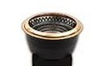
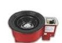
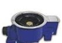
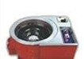
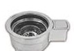
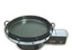
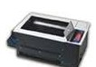
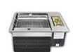
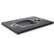
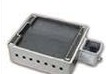
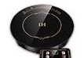
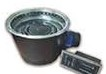
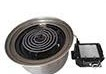
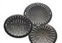
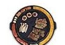
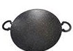
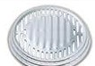
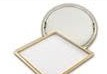
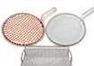
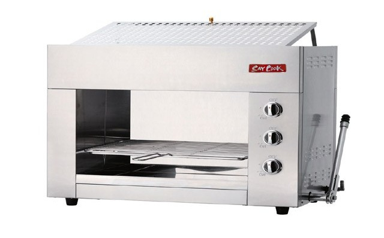
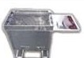
Let's talk kitchen
우리 업소에 맞는 장비,
함께 찾아볼까요?
원하는 제품이나 주방 고민을 들려주세요. 친절하게 안내해 드립니다.
Office · Vietnam0242 123 8009
Mobile · 098 648 0220
Mobile · 035 241 3811
Mobile · 038 210 8311
33 Vuon Cam, Phuong Tu Liem, Ha NoiGoogle 지도에서 보기 ↗
전화하기 ↗